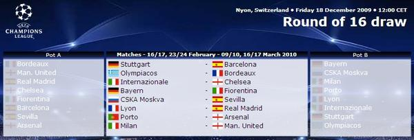
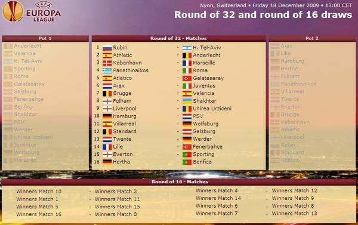

2009년 12월 전체 글 목록 |
2009/12/29 미샤 인터뷰 (bundesliga.de, 2009-12-27)
2009/12/25 미샤 인터뷰 제목 붙이기
2009/12/24 미샤 인터뷰 (Rheinischen Post, 2009-12-24)
2009/12/19 09/10 UEFA 챔피언스 리그 16강, 유로파 리그 32강 추첨 결과
2009/12/10 액션 팬 샘 워딩턴
2009/12/25 미샤 인터뷰 제목 붙이기
2009/12/24 미샤 인터뷰 (Rheinischen Post, 2009-12-24)
2009/12/19 09/10 UEFA 챔피언스 리그 16강, 유로파 리그 32강 추첨 결과
2009/12/10 액션 팬 샘 워딩턴
"Mein Ehrgeiz ist unverändert groß" (독문)
"I'm as ambitious as ever" (영문)
사랑의 힘으로 후딱 해 본 영문->한글 번역.
89.1322%는 맞게 했으리라고 본다.
원문 & 나름 영한대역 백업: micha20091227.txt
"I'm as ambitious as ever" (영문)
사랑의 힘으로 후딱 해 본 영문->한글 번역.
89.1322%는 맞게 했으리라고 본다.
"저는 변함없이 야심이 있습니다."
독일의 주장 미하엘 발락은 이제 첼시에서 3년 이상 뛰고 있다. 현재 EPL에서 뛰고 있는 유일한 독일 국가 대표 선수인 발락은 bundesliga.de와의 인터뷰에서 잉글랜드와 독일 탑 리그의 차이점에 대해, 명성의 댓가에 대해, 그리고 그 밖의 많은 것들에 대해 이야기한다.
bundesliga.de: 미하엘 발락, 당신은 EPL에서 이제 4번째 시즌을 맞고 있습니다. 당신의 나머지 축구 경력에 대해 어떤 대략적인 계획을 갖고 계신가요?
Michael Ballack: 저는 제가 건강하다고 느끼는 한, 여전히 경기를 즐기는 한, 그리고 물론 제 경기력의 수준이 만족스러운 상태에 머무르는 한 계속 뛰고 싶습니다. 큰 대회를 기준으로 계획을 세우는 건 더 이상 쉽지 않아요. 저는 유로 2012 때가 되면 35살이 되고, 이젠 한 해 단위로 생각을 하는 경우가 많습니다. 하지만 기본적으로, 지금 이 순간 클럽에서나 국가 대표팀에서나 당분간은 은퇴할 생각이 없습니다. 다른 한편으로는 장기 계획도 세우지 않고 있습니다. 중요한 스포츠적인 목표에 있어서 저는 변함없이 야심이 있습니다.
bundesliga.de: 당신 자신의 경력은 확실한 상승 곡선을 따라왔습니다. 켐니츠에서 카이저슬라우테른, 레버쿠젠과 FC 바이에른을 거쳐 현재 유럽 최강의 리그에서 최고 클럽 중의 하나에 29살의 나이에 이적해서 뛰고 있죠. 이건 다른 선수들이 따라할 예일까요?
Ballack: 제 경우에는 일이 잘 풀렸고, 되돌아보건대 그건 올바른 접근이었습니다. 물론, 더 일찍 외국의 이적 제의 중 하나를 받아들였다면 일이 어떻게 되었을지는 알 수 없습니다. 그런 의미에서 저의 개인적인 긍정적인 경험에 비추어 다른 선수들에게 조언을 할 수는 없습니다. 만약 오늘 20살의 선수가 외국으로부터 환상적인 제의를 받는다면 그건 그 스스로 결정해야 할 문제입니다: 나는 이것을 바로 지금 받아들이고 싶은가? 다른 대안은 무엇인가? 그리고, 중요한 것은 또한 언제나 운이 작용한다는 겁니다.
bundesliga.de: 현재 잉글랜드에서 당신의 상황에 대해서 어떻게 보고 있습니까?
Ballack: 이런 한 발자국을 내딛는 것은 언제나 개인적으로 도전이 되는 일이고, 이건 단지 축구라는 측면에서만은 아닙니다. 처음의 정착기, 오래 전에 물론 지나간 정착기 후에 아주 좋은 경험이 이어졌습니다. 우리 가족은 여기서 편안합니다. 일단 집을 구하고 아이들을 학교에 입학시키고 통상적인 일들 약간에 익숙해지고 나서는 우리는 안착했지요. 그리고 잉글랜드의 축구는 아주 즐겁습니다. 분위기라는 측면에서도 그렇죠. 관중들이 바로 위에 있고 스타디움에는 울타리가 없습니다. 그건 선수들에게 매혹적입니다.
bundesliga.de: 세계 최고의 리그라는 명성에 걸맞나요? 그 명성은 어디에 기반을 두고 있나요?
Ballack: 첫째 무엇보다도 물론 그건 선수들의 우수함입니다. 분데스리가도 거의 언제나 매진되는 훌륭한 스타디움과 멋진 팬들과 그 밖의 모든 것들, 최고 수준의 기반시설을 갖추고 있습니다. 그러나 최고 수준의 선수들이 많이 잉글랜드로 가기로 선택하는 것은 그곳이 스포츠적인 측면에서나 재정적인 측면에서나 가장 매력이 있기 때문입니다. 지난 몇 년간 CL의 막바지를 보면 알 수 있듯이 이건 다시 EPL의 수준을 국제적인 수준에서 향상시킵니다.
bundesliga.de: 그런 우수함이 맨체스터 유나이티드, 리버풀, 첼시, 그리고 아스날이라는 빅4 이외에도 해당되는 겁니까?
Ballack: 빅4는 확실히 아주 강력하게 자리잡고 있고 최근 몇년간 우위였습니다. 아직 다른 클럽들이 이 우위에 도전하지 못 하고 있다는 사실은 이들 빅4가 아주 높은 수준에서 경기하고 있다는 증거입니다.
bundesliga.de: EPL의 하위팀들과 분데스리가의 하위팀을 비교한다면?
Ballack: 두 리그를 그런 식으로 비교하긴 어렵습니다. 왜냐하면 축구의 스타일이 다르니까요. EPL의 하위팀들이 확실히 더 강인하고 훨씬 더 피지컬한 스타일입니다. 그리고 전술적으로도 차이가 있습니다.
bundesliga.de: 축구 능력은 별개로 하고, EPL에서 선수가 성공하기 위해 필요한 다른 자질은 무엇일까요?
Ballack: 일급의 기술과 정신적인 강인함과 더불어, 무엇보다 강력한 신체적인 존재감입니다 - 유럽의 다른 어떤 리그에서보다도 더 그렇습니다. 경기장 밖에서도 또한 경기에 관련된 온갖 잡음에 대처하기 위해 의지가 강해야 합니다.
bundesliga.de: 당신이 프로 선수 생활을 시작한 이래로 선수들에 대한 압박이 증가했나요?
Ballack: 압박은 늘어왔고 앞으로도 계속 늘어날 겁니다. 미디어가 보도하는 폭은 모든 것을 점점 더 투명하게 만들고 있죠. 지금도 그냥 내뱉은 단어 하나하나가 그 의미가 가늠됩니다. 프란츠 베켄바우어가 아닌 다음에야 뭔가 말한 다음 날 왜곡된 내용에 대해 명확히 하거나 철회하거나 하는 발표를 하게 되죠. 오늘날 선수들은 아주 세세한 감시 하에 있습니다. 그리고 그 댓가를 받는 항변이 항상 도움이 되는 것은 아닙니다. (이 부분은 솔직히 무슨 말인지 정확히 모르겠음. 원문은 And the counter-argument, that you're paid very well for it, doesn't always add up.) 축구 선수는 이런 게임에서 여전히 주연이고, 이런 일들이 항상 아무런 자국도 남기지 않고 날아가지는 않습니다.
bundesliga.de: 이런 모든 것들에 대처하기 위해 국가 대표팀의 젊은 선수들은 클럽 아카데미에서 적절하게 대비를 받고 있나요?
Ballack: 대체적으로, 독일의 선수들은 이제 그들이 프로 선수가 된다면 무엇을 예상해야 하는지에 대해 더 일찍 교육을 받습니다. 저 자신은 최적화된 일정에 따라 동독에서 좋은 학교에 다닐 수 있었지만, 확실히 예전보다 지금이 낫습니다. 프로페셔널리즘과 경기력 분석에 있어서, 분데스리가의 16,17살 선수들은 생각할 수 있는 모든 지원을 받고 있습니다.
bundesliga.de: 당신같이 경험많은 선수에게 언론에서 "좋은 평가"를 받는 것이 얼마나 중요한가요?
Ballack: 인정받고 칭찬받는 것은 다른 모든 직업에서와 마찬가지로 축구에서도 언제나 중요합니다. 우리는 끊임없이 조명을 받고 있고, 따라서 공개적인 평가는 어쩔 수 없는 현실입니다 - 칭찬을 받든 비난을 받든 말입니다.
bundesliga.de: 잉글랜드에서 고국인 독일에서와는 다른 방식으로 당신의 개인적인 인기를 경험합니까?
Ballack: 예를 들어 뮌헨의 골목에서보다 런던의 붐비는 도심에서 사람들이 저를 덜 알아본다고는 할 수 없습니다. 축구는 전 세계 어디에나 있습니다. 런던만 해도 EPL 클럽 다섯개가 있죠. 저는 독일에서와 마찬가지로 여기서도 대중 앞에서 제 일을 볼 수 있습니다. 남유럽이나 남미에서 볼 지 모르는 광적인 요소들은 여기서는 흔하지 않습니다. 예외는 이 직업의 일부이고 제 삶의 일부입니다. 시간이 지나면 거기에 익숙해지게 됩니다. 부분적으로는, 그것이 팬들로부터 나오는 것이라는, 따라서 나쁜 게 아니라는 것을 알기 때문이죠. 원칙적으로 그건 기뻐할 일입니다.
원문 & 나름 영한대역 백업: micha20091227.txt
# by 파이 | 2009/12/29 20:37 | Pastime
어제 읽은 미샤 인터뷰 (Rheinischen Post, 2009-12-24) 제목이
매체에 따라 어떻게 달라지는가.
Rheinischen Post : Ballack: "Manchmal bin ich ein strenger Vater" (발락: 저는 때로 엄한 아버지입니다)
Bild: Ballack hatte Angst vorm Weihnachtsmann (발락은 산타클로스를 무서워했다)
The Sun : Three lions can rule the world (삼사자 군단 세계를 제패할 수 있어)
goal.com/en: Germany skipper Michael Ballack: England can win the 2010 World Cup (독일 주장 미하엘 발락: 잉글랜드는 2010 월드컵에서 우승할 수 있다)
goal.com/kr : 발락 "잉글랜드, 월드컵 우승 유력 후보" (기사 제목부터 마무리까지 센스하고는 -_-+ 기자가 잉글랜드 빠인 모양이다.)
우리라면
'발락, 크리스마스에 가족과 함께 노래 불러' 라고 붙였을 것임 ^^;
매체에 따라 어떻게 달라지는가.
Rheinischen Post : Ballack: "Manchmal bin ich ein strenger Vater" (발락: 저는 때로 엄한 아버지입니다)
Bild: Ballack hatte Angst vorm Weihnachtsmann (발락은 산타클로스를 무서워했다)
The Sun : Three lions can rule the world (삼사자 군단 세계를 제패할 수 있어)
goal.com/en: Germany skipper Michael Ballack: England can win the 2010 World Cup (독일 주장 미하엘 발락: 잉글랜드는 2010 월드컵에서 우승할 수 있다)
goal.com/kr : 발락 "잉글랜드, 월드컵 우승 유력 후보" (기사 제목부터 마무리까지 센스하고는 -_-+ 기자가 잉글랜드 빠인 모양이다.)
우리라면
'발락, 크리스마스에 가족과 함께 노래 불러' 라고 붙였을 것임 ^^;
# by 파이 | 2009/12/25 21:05 | Pastime
+ http://www.rp-online.de/sport/fussball/nationalelf/wm/Ballack-Manchmal-bin-ich-ein-strenger-Vater_aid_799387.html
[보기]
나름 크리스마스 특집 인터뷰인 듯.
특히 눈길이 가는 부분 몇 군데만 번역기 거쳐서 발로 번역해 본다. 오역 가능성 89.1322%
크리스마스 트리 아래에서 가족과 함께 노래를 한단다 +_+
이건 정말 한 번 봤으면 좋겠네 ^^;;
미샤야 너 유튜브질 같은 건 안 하니 ;;
하긴 이건 지극히 사적인 것인데 보고 싶어하는 우리가 잘못이다 ;;;
[보기]
나름 크리스마스 특집 인터뷰인 듯.
특히 눈길이 가는 부분 몇 군데만 번역기 거쳐서 발로 번역해 본다. 오역 가능성 89.1322%
- 당신의 고향은 어디입니까?
미샤: 제 고향은 물론 켐니츠입니다. 제가 자란 곳이고 제 인생의 대부분을 보낸 곳이지요.
- 어린 시절 크리스마스에 대한 특별한 추억이 있습니까?
미샤: 저는 언제나 산타클로스를 조금 무서워했어요. 이 목소리 굵은 아저씨에 대해 당연히 존경심을 가졌죠. 어떤 때는 우리 집에 온 것을 보는 때도 있었고 어떤 때는 선물만 발견하는 때도 있었어요. 처음으로 큰 자전거를 받았던 때가 기억납니다. 8살 때 받은 거였죠.
- 잉글랜드에서 뛰는 프로 축구 선수로서 크리스마스가 독일에서와는 좀 다를 텐데요. 박싱 데이에 경기를 하기도 하구요. 크리스마스를 어떻게 축하하나요?
미샤: 크리스마스 이브는 여느 이브와 같습니다. 그러나 크리스마스 때에도 훈련을 하고 원정경기를 위해 크리스마스 당일에 떠나야 해요. 좀 유감스러운 일이지만 한 번뿐입니다.
- 크리스마스 트리 아래에서 가족과 함께 노래를 합니까?
미샤: 네, 적어도 한 곡은 모두 함께 부릅니다.
- 당신은 엄한 아버지인가요?
미샤: 제 아내는 아니라고 합니다. 하지만 제가 생각하기에 저는 때로 엄한 아버지입니다. 사내 녀석 셋하고 지내면 그렇게 되지 않겠어요? 하지만 제 아내는 늘 말하기를 제가 애들을 너무 풀어준다고 합니다. (하략)
- TV로 축구를 많이 보시나요?
미샤: 네. 전에는 더 많이 봤습니다. 이제는 모든 경기를 다 보진 않습니다. 하지만 챔피언스리그, 국가대표 경기, 분데스리가 경기는 봅니다. TV 앞에서는 저도 평범한 팬처럼 경기를 즐길 수 있죠.
- ... 애들과 함께요?
미샤: 네. 벌써 함께 봅니다. 하지만 애들은 아직 인내심이 부족해요. 오랫동안 골이 들어가지 않으면 한눈을 팔죠.
- 첼시와의 계약이 여름에 끝납니다. 협상은 어떻게 되어가고 있나요?
미샤: 곧 만나서 얘기를 할 겁니다. 하지만 압박감은 없습니다. 양쪽 모두 서로 무엇을 가지고 있는지 알고 있습니다.
- 챔피언스리그에서 첼시가 우승하는 것과 월드컵에서 독일이 우승하는 것 중 어느 쪽이 더 가능성이 높을까요?
미샤: 챔피언스리그 우승 가능성이 조금 더 높다고 생각합니다. 우리는 우승 가능성이 가장 높은 팀 중의 하나로 여겨지고 있습니다.
- DFB 회장인 테오 츠반치거와 감독 요아힘 뢰브는 월드컵 우승을 목표로 하고 있습니다. 우승할 가능성이 현실적으로 어느 정도일까요?
미샤: 월드컵 우승을 위해서는 모든 것 - 그리고 그 이상이 있어야 합니다. 행운도 필요하죠. 지금 현재 우리보다 훌륭한 팀들이 확실히 있습니다.
- 발롱도르 후보에 독일 선수는 오르지 못했습니다. 왜일까요?
미샤: 간단합니다. 우리가 충분히 훌륭하지 못하기 때문입니다. (하략)
크리스마스 트리 아래에서 가족과 함께 노래를 한단다 +_+
이건 정말 한 번 봤으면 좋겠네 ^^;;
미샤야 너 유튜브질 같은 건 안 하니 ;;
하긴 이건 지극히 사적인 것인데 보고 싶어하는 우리가 잘못이다 ;;;
# by 파이 | 2009/12/24 23:51 | Pastime
귀찮아서 그냥 캡처해서 올린다.
모니터 해상도가 낮다면 클릭을 해야 제대로 보일지도 모른다.
모니터 해상도가 낮다면 클릭을 해야 제대로 보일지도 모른다.


# by 파이 | 2009/12/19 21:41 | Pastime
+ Action fan Sam Worthington
'Sam Worthington would rather fight than kiss Keira Knightley.'
하핫, 이 녀석 점점 더 마음에 든다 :-)
+ Five Favorite Films With Avatar's Sam Worthington
Lethal Weapon 2 (1989)
Mad Max 2, aka The Road Warrior (1981)
The Year of Living Dangerously (1983)
Beverly Hills Cop (1984)
Die Hard (1988)
가장 좋아하는 영화 5편 중 4편이 액션 영화.
전부 80년대 영화네.
아무튼, 좋은 명단이다.
'Sam Worthington would rather fight than kiss Keira Knightley.'
하핫, 이 녀석 점점 더 마음에 든다 :-)
+ Five Favorite Films With Avatar's Sam Worthington
Lethal Weapon 2 (1989)
Mad Max 2, aka The Road Warrior (1981)
The Year of Living Dangerously (1983)
Beverly Hills Cop (1984)
Die Hard (1988)
가장 좋아하는 영화 5편 중 4편이 액션 영화.
전부 80년대 영화네.
아무튼, 좋은 명단이다.
# by 파이 | 2009/12/10 21:52 | Pastime
| < 이전페이지 | 다음페이지 > |